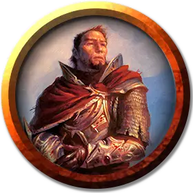

Алагартхас
Alagarthas
Средний Гуманоид (Эльф), хаотично-добрый, именной НИП

Класс Доспеха 10
Хиты 52 (8к8 + 16)
Скорость 30 футов
| мод | спас | ||
|---|---|---|---|
| СИЛ | 16 | +3 | +3 |
| ЛОВ | 11 | +0 | +0 |
| ТЕЛ | 14 | +2 | +4 |
| мод | спас | ||
|---|---|---|---|
| ИНТ | 11 | +0 | +0 |
| МДР | 11 | +0 | +2 |
| ХАР | 15 | +2 | +2 |
Чувства тёмное зрение 60 футов, пассивное Восприятие 10
Языки Общий, Эльфийский
Опасность 3 (700 опыта)
Бонус мастерства +2
Особенности
Наследие фей. Алагартхас имеет преимущество в спасбросках против очарования, и не может быть усыплен при помощи магии.
Храбрый. Алагартхас совершает с преимуществом спасброски от испуга.
Действия
Мультиатака. Алагартхас совершает две рукопашные атаки.
Безоружный удар. . Рукопашная атака оружием: +5 к попаданию, досягаемость 5 футов, одна цель. Попадание: 4 дробящего урона.
Лидерство (перезаряжается после короткого или продолжительного отдыха). В течение 1 минуты Алагартхас может произносить особую команду или предостережение каждый раз, когда невраждебное существо, видимое им в пределах 30 футов, совершает бросок атаки или спасбросок. Это существо может добавить к4 к броску, если может слышать Алагартхаса и понимает его. Существо может получать преимущество только от одного Лидерства одновременно. Этот эффект оканчивается, если Алагартхас становится недееспособным.
Описание
Этот принц заключил сделку с Энделиной Лунной погибелью и расплачивается за это. Он жаждет вернуться в свой дом в Туманном лесу и справиться с угрозой злого зеленого дракона, который гнездится там.